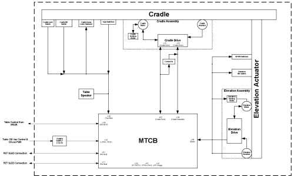
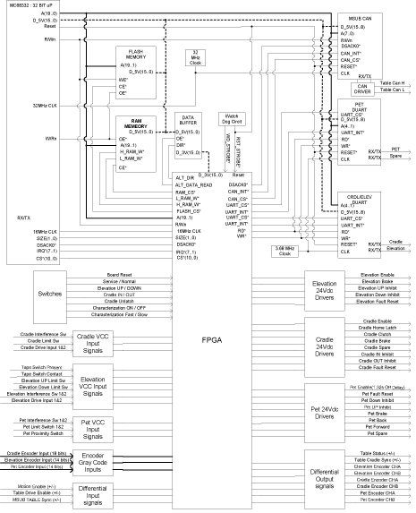

Operating Documentation
Direction 5224328-800, Rev# 5
Dir 5224328-800 LightSpeed 5.X HP60 Limited Access Service
Methods - Adv.
Operating Documentation |
Patient positioning is done manually through the gantry mounted operator controls. The drives provide horizontal and vertical positioning of the patient. Longitudinal motion of the cradle provides horizontal positioning through the scan plane. During scanning modes, longitudinal position is controlled by the MTCB board. Longitudinal motion can also be controlled with console push buttons used to advance the patient to the next scan position.
The main features of the table system used on this CT system, when compared with tables used on LightSpeed 4.X or previous systems, are as follows:
The table functionality is limited to elevation and longitudinal (cradle) patient positioning. (The table no longer controls gantry tilt operation, nor interfaces gantry control push buttons and display and table foot switches.)
The cable connections to the table are reduced to the following three:
Signal cable
Low voltage AC power supply (120 VAC single phase)
Ground cable
Two identical AC servo drives are used for elevation and cradle, respectively.
Absolute encoders are used for elevation and cradle, instead of incremental encoders. The absolute encoder has the capability to generate an unique binary 'word' for each encoder shaft position, allowing the encoder to provide positional information instantly upon power-up, unlike incremental encoders.
Therefore, potentiometers are not used on this table system.
The table is not included in the Emergency Stop Interlock loop.
Illustration 1: Table Block Diagram

| NOTE: | For a larger version of this illustration, click on the pdf icon below: |
Media File 1: Table Block Diagram

Control of this closed loop drive system is provided by the MTCB board. The board sets velocity, direction, acceleration, and position, and sends the commands to the drive via the serial lines. The drive amplifier is supplied with 120 VAC single phase. The resulting output is supplied through an enable relay to the cradle drive motor. The motor turns a drive roller at the front of the table that the cradle rests on, thus causing the cradle to move.
Direction and speed feedback is supplied by an encoder driven by a cable and spool assembly attached to the cradle mounting hardware. The cradle encoder outputs approximately 54 counts per mm of cradle movement and makes 10 and a half revolutions over the full cradle range. There are no adjustments for this control loop.
On power-up, the MTCB firmware inputs data to the motor controller (cradle drive) to set-up the position reference based off the absolute encoder. Once characterized, the encoder output as read by firmware will read -0- counts at the cradle home position, and 91962 counts at the full extension of 1703mm, using 54.0 counts/mm. Firmware tells the drive the initial location of the cradle on power-up, and after that the drive will keep track of absolute position via the incremental quadrature counts delivered directly from the MTCB board.
Absolute Encoder for Cradle:
The encoder is a multi-turn type with a cable take-up spool.
Output: Bit Parallel, 17 Bit Gray Code
Once a patient landmark has been set, changing the table elevation by using the gantry mounted push buttons will result in the cradle moving in or out so that the position of the cradle in the gantry opening and patient landmark remain unchanged. This auto move correction does not occur if the elevation is changed with the foot switches or if a landmark has not been set.
Depressing the gantry mounted operator control cradle release switch will cause the cradle to float freely. This allows the operator to pull the cradle and patient back to the foot end latch position, in case of a patient emergency. Depressing the cradle release switch again will cause the drive to engage and enable the cradle to be driven away from the latched position.
Table Sync Generation is used to inform the axial controller that the table has reached the start of scan position for scout scans.
Control of this closed loop drive system is provided by the MTCB board. Interlocks and enables are set by a table/gantry interference matrix and firmware. The drive amplifier is supplied with 120 VAC single phase. The resulting output is supplied through enable and motor select relays to the table elevation drive motor. The control circuit has no adjustments.
Elevation feedback is provided by a 6:1 geared encoder and is converted to elevation information by the MTCB board firmware. On the MTCB board the signal enabling elevation is intercepted and another enable is created so that the board can disable elevation if the interference sensor is in fault or interference is detected.
Absolute Encoder for Elevation:
The encoder is a single-turn type.
Output: Bit Parallel, 13 Bit Gray Code
Elevation switches are magnetic reed switches located at the top and bottom of the elevation linear actuator assembly. Cradle limit switches are mechanical switches located at either extreme end of cradle movement. Firmware ensures that these extreme positions are never achieved. The limit positions can be achieved during the characterization process or firmware/hardware failure.
Tape switches are located at positions where it is possible for patient extremity injury during positioning. If any of these switches are depressed, cradle longitudinal and table elevation drives are disabled and the gantry operator control panel reset light will flash at a fast frequency. Removing the table side covers will activate this circuitry as well. A jumper plug is provided under the side covers, to enable the drive circuits for service purposes. Depressing the gantry operator control reset switch will once again enable these drives.
MTCB stands for Milwaukee Table Control Board.
The MTCB interfaces with the MSUB and TGP boards and re-directs necessary communication to the Cradle Drive and Elevation Drive. The MTCB facilitates the following major functions:
Provide RS232 communication interface with Elevation Drive for elevation up an down functionality.
Provide RS232 communication interface with Cradle Drive for cradle inward motion and outward motion functionality.
Provide interface for the Elevation Interference Detection functionality.
Provide interface for the Cradle Home Position Detection functionality.
Provide isolated 5Vdc power for CAN Communication with MSUB and TGP boards.
Provide Cradle and Elevation control using encoder gray-code inputs to synthesize quadrature output signals for table position and velocity functionality.
Provide control of Cradle Enable, Clutch, Cradle Home Latch, Clockwise and Counter Clockwise Inhibits, and Fault Reset.
Provide control of Elevation Enable, Clockwise and Counter Clockwise Inhibits, and Fault Reset.
Provide control of optional Elevation Brake and Cradle Brake, and Elevation Clutch functionality.
Provide a differential signal to the MSUB to synchronize the table with the gantry.
Provide Service Switch Control for Elevation Motion (up/down), and Cradle Motion (in/out).
Provide Service Switch Control for Cradle Characterization, Elevation Characterization, in either fast or slow driver motion.
Provide RS232 communication interface with PET Sled Drive for CT/PET Hybrid table motion inward and outward functionality.
Provide interface for the PET Sled Interference Detection functionality.
Provide Pet Sled motion control using encoder gray-code inputs to synthesize quadrature encoder output signals.
Illustration 2: MTCB Block Diagram

| NOTE: | For a larger version of this illustration, click on the pdf icon below: |
Media File 2: MTCB Block Diagram

Hardware Description:
Brief descriptions about the main devices on the board are written below:
Micro Controller (MC68L332): This incorporates a 32 bit CPU (16MHz), a system integration module (SIM), a time processing unit (TPU), etc.
DUART (Dual Universal Asynchronous Receiver/Transmitter
Serial Communication Controller CAN: Performs serial communication according to the CAN Protocol.
FPGA (Field Programmable Gate Array): This is used for implementing digital functions. It is programmed at power-up from an external serial PROM. The FPGA will implement the following functions:
Input Status registers
Interrupt matrix
Cradle, Elevation, Pet Sled encoder grey code to binary conversion
Cradle, Elevation, Pet Sled position / offset position comparison
Cradle, Elevation, Pet Sled quadrature output generation
Cradle Sync pulse to MSUB
Output control registers
Watchdog circuitry
Board part number and revision number status registers
Synthesized Duart Read / Write control signals.
Synthesized Ram High and Low memory chip selects.
Debounce circuitry for switch inputs
Control Status input delay circuitry
Table 1: MSUB Interface
| Signal | Description |
| Table CAN, Control Signals | A CAN controller interface IC is used to provide CAN communications to the MSUB. The table drive is commanded by the firmware via CAN network. A filtered 12V power and ground bus on the MSUB are necessary for the Table CAN communication. The Table CAN is optically isolated from rest of the MTCB. |
| Asynchronous Table Cradle Sync Signal | This signal is for communication from the MTCB to the MSUB quickly with a differential signal that is received on the MSUB which creates a maskable interrupt to the TGP processor. This signal also creates a maskable interrupt to the MTCB processor to indicate that a sync signal was sent to the TGP via MSUB. |
| Asynchronous MSUB to Table Sync Signal | The MSUB Table Sync signal is provided to allow the MSUB to send a signal to the MTCB quickly and asynchronously. The signal generates a maskable interrupt on the MTCB processor. |
| Table Drive Enable Differential Signals | This is a differential signal that is sent to the MTCB from the MSUB, which is used to provide for an electrical hard line from the Gantry control push buttons, Remote tilt buttons, Smartview foot switches, and Service tilt switches. This differential signal must be met for motion (cradle and elevation) to be available in the table. |
| Motion Enable Command Differential Signals (Gantry E-Stop | This is a differential signal that is used to indicate to the MTCB that E-Stop has been pressed and within 1.5 seconds, the 120VAC to the table will be turned off. This provides the MTCB enough time to stop the cradle and prepare for the loss of power. |
| Table Status Signal | This is a differential signal generated by the MTCB that indicates that the Motion Enable command from host is transmitting, watchdog is working correctly, and if firmware is satisfied. This signal can be interpreted as a fault line to the MSUB. |
| Table Speaker Signals | The table speaker signals will pass through the MTCB to the speaker system located on in the table. |
The MTCB contains a UART to perform serial communications (RS232) with the cradle drive.
Table 2: Input Signals from Cradle
| Signal | Description |
| Encoder Gray Code | The MTCB receives a 17 bit gray code input from the cradle encoder to synthesize quadrature output signals for table position and velocity functionality. |
| Cradle Spare Inputs (Cradle Drive Outputs 1&2) | The MTCB has two spare inputs from the Cradle Drive. These two signals can be programmed on the drive to be active under different conditions. |
| Cradle Limit Switch | The MTCB has a cradle limit switch that actuates when the cradle has extended too far into the gantry. This signal generates a maskable interrupt signal that is sent to the microprocessor. |
| Cradle Position Reference Switch | The Position Reference switch actuates when the cradle has been retracted to within ¾ inches from the home position. This signal generates a maskable interrupt signal that is sent to the microprocessor. |
Table 3: Output Signals to Cradle
| Signal | Description |
| Cradle Enable | This is a firmware controlled signal originating in the FPGA code. This signal controls a solid state relay on the MTCB that sends out 24Vdc to the Cradle Drive when the relay is closed and 0Vdc when the relay is open. This signal is used to enable cradle drive motion in either the extending or retracting direction. The following conditions must be met in order for the cradle drive to be enabled. |
| |
| Cradle Drive Inhibits | Cradle Inward (Extended) Motion Inhibit: |
| This signal controls a solid state relay on the MTCB that sends out 24Vdc to the Cradle Drive when the relay is closed. This signal is used to inhibit the motion in the Inward direction for the cradle. In order for this signal not to be inhibiting the inward cradle motion the cradle limit switch must not be activated. This signal can be forced active by firmware. | |
| Cradle Outward (Retract) Motion Inhibit: | |
| This signal controls a solid state relay on the MTCB that sends out 24Vdc to the Cradle Drive when the relay is closed. This signal is used to inhibit the motion in the outward direction for the cradle. This signal is controlled by firmware only. | |
| Cradle Extending / Retracting Motion Control | This functionality is controlled by firmware only. |
| The enable signals and inhibit signals need to be in the correct state in order for firmware motion control. | |
| Cradle Drive Fault Reset | This signal controls a solid state relay on the MTCB that sends out 24Vdc to the Cradle Drive when the relay is closed. This signal is used to reset the drive by through a hard line instead of through the serial port interface. |
| Cradle Spare Output | The MTCB has one spare output signal for the cradle functionality. This signal controls a solid state relay on the MTCB that sends out 24Vdc when the relay is closed. |
| Cradle Home Latch | This signal controls a solid state relay on the MTCB that sends out 24Vdc to the Cradle Home Latch Solenoid when the relay is closed. This signal is used to energize the home latch solenoid to release when it is in the home position. |
| Cradle Latch | This signal controls a solid state relay on the MTCB that sends out 24Vdc to the Cradle Clutch Solenoid when the relay is closed. This signal is used to energize and engage the drive clutch for cradle drive. |
The MTCB contains a UART to perform serial communications (RS232) with the elevation drive, as with the cradle drive.
Table 4: Input Signals from Elevation
| Signal | Description |
| Encoder Gray Code | The MTCB receives a 13 bit gray code input from the elevation encoder to synthesize quadrature output signals for table position and velocity functionality. |
| Elevation Spare Inputs (Elevation Drive Outputs 1&2) | The MTCB will have two spare inputs from the Elevation Drive. These two signals can be programmed on the drive to be active under different conditions. |
| Elevation Limit Switch | The MTCB has two elevation limit switch inputs. An elevation down limit switch input and an elevation up limit switch input. These signals are used to indicate when the table is at the upper limit or the lower limit position, and send a maskable interrupt to the microprocessor. |
| |
| Elevation Interference Switch | The MTCB has two elevation interference switch inputs. These signals are used to reference the position of the table, and send a maskable interrupt to the microprocessor. |
| |
| Table Tape Switch | The MTCB has an input signal for having the tape switch present and for having a tape switch contact condition. These signals send a maskable interrupt to the microprocessor on a change of state. Elevation down is inhibited when the tape switch is not present or when it has been contacted. Elevation up motion is not inhibited by the tape switch in either case, present or contacted. |
Table 5: Output Signals to Elevation
| Signal | Description |
| Elevation Enable | This is a firmware controlled signal originating in the FPGA code. This signal controls a solid state relay on the MTCB that sends out 24Vdc to the Elevation Drive when the relay is closed. This signal is used to enable the elevation drive motion in either the upward or downward direction. The following conditions must be met in order for the elevation drive to be enabled. |
| |
| Elevation Drive Inhibits | Elevation Upward Motion Inhibit: |
| This signal controls a solid state relay on the MTCB that sends out 24Vdc to the elevation drive when the relay is closed. This signal is used to inhibit the motion in the upward direction. In order for this signal not to be inhibiting the upward table motion the elevation up limit switch must not be activated. This signal can be forced active by firmware. | |
| Elevation Downward Motion Inhibit: | |
| This signal controls a solid state relay on the MTCB that sends out 24Vdc to the elevation drive when the relay is closed. This signal is used to inhibit the motion in the downward direction for the table. In order for this signal not to be inhibiting the downward table motion the elevation down limit switch must not be activated. This signal can be forced active by firmware. | |
| Elevation Upward / Downward Motion Control | This functionality is controlled by firmware only. The enable signals and inhibit signals need to be in the correct state in order for firmware motion control. |
| Elevation Drive Fault Reset | This signal controls a solid state relay on the MTCB that sends out 24Vdc to the elevation drive when the relay is closed. This signal is used to reset the drive by through a hard line instead of through the serial port interface. |
| Elevation Spare Output | The MTCB does not have a spare output for the elevation functionality. |
The MTCB is not included in the E-stop Interlock loop. This function is local to the gantry, console, and PDU. The MTCB is effected by the opening of the E-stop Interlock loop. A differential signal is sent to the MTCB from the MSUB indicating that the E-Stop Interlock Loop has been opened. The 120Vac power to the Table will be severed in 1.3 seconds which allows the firmware to stop the cradle and elevation motion. There will be no 120 Vac power to the table until the E-Stop Interlock Loop has been reset.
This signal provides the same Hard Line Enable function as that from the MSUB. The Hard Line Enable is used to provide for an electrical hard line from the Gantry control push buttons.
This differential signal must be met in order for motion to be available in the table.
Table Characterization (cradle or elevation) is a process that must be completed anytime when the following components are replaced:
Encoder
MTCB Board
Table Characterization is not required when the table is installed.
This process is used to compensate for mechanical variation in the table that would otherwise cause inaccuracy in terms of position or velocity. The process used for the table system sets 2 key parameters.
The first parameter establishes the zero-position of the drive (offset). For the cradle this is at the “home” position (cradle fully retracted), (for elevation this is for the fully down position). It is important to note that in either case, the limit switch has not been activated at the zero position - limit switches are used only to halt motion if the drive mechanism accidentally moves past the mechanical limits. A pin is inserted manually at the cradle home position to accurately place and hold the cradle at the zero reference. The MTCB firmware then reads the cradle location from the encoder.
The second parameter establishes a linear correction (gain) to compensate for inaccuracies across the full range of position, mainly caused by encoder spool inaccuracies (in the case of cradle).
A signal is sent to the processor when S7 is set to the Characterization ON switch position indicating that the MTCB is in characterization mode and is waiting for the cradle and elevation characterization buttons to be pressed.
Characterization/Manual Service Speed:
Characterization / Manual Service Speed can be at either slow or fast motion speed determined by firmware set by SW6.
Cradle Char Input Switch:
This signal informs the processor that cradle characterization position has been met.
Signal is sent to the processor when S9 is pressed. This is a momentary contact switch.
Elevation Char Input Switch:
This signal informs the processor that elevation characterization position has been met.
Signal is sent to the process when S5 is pressed. This is a momentary contact switch.
The Cradle can be Unlatched or Latched by S10.
When S10 is pressed, a signal is sent to the processor indicating that there is a request to unlatch or latch the cradle. Firmware will then send an output command to unlatch or latch the cradle.
This switch does not work without firmware response to S10. This is a momentary contact switch.
Cradle motion can be controlled from S2 when S4 is in Service Mode.
When S2 is switched to IN or OUT position, a signal is sent to the processor indicating that there is a request to move the cradle. If interlock conditions are not violated, firmware will then control the cradle motion through the Cradle UART connection.
This switch does not work without firmware response to S2.
| NOTE: | Interference Matrix is not functional in service mode. |
Elevation motion can be controlled from SW3 when S4 is in Service Mode.
When S3 is pressed, a signal is sent to the processor indicating that there is a request to elevate the table. If interlock conditions are not violated, firmware will then control the elevation motion through the Elevation UART connection.
This switch does not work without firmware response to S3.
| NOTE: | Interference Matrix is not functional in service mode. |
Table 6: Switches
| Switch | Position | Description |
| S-11 Pet SLED IN/OUT | PET IN | Moves the Pet Sled Inward toward gantry |
| PET OUT | Moves the Pet Sled Outward away from gantry | |
| S-02 Service Cradle IN/OUT | CRADLE IN | Moves the Cradle inward toward the gantry (Service Mode) |
| CRADLE OUT | Moves the Cradle outward away from the gantry (Service Mode) | |
| S-03 Service Elevation UP/DOWN | ELEVATION UP | The table will move in the up direction (Service Mode) |
| ELEVATION DOWN | The table will move in the downward direction (Service Mode) | |
| S-04 Service Mode | SERVICE MODE | The board is in Service Mode, allowing for service functions |
| NORMAL MODE | Board is in the Normal Operating Mode (Firmware Control) | |
| S-05 Cradle Characterize | PRESSED | Signal sent to firmware indicating Cradle Characterization has been pressed |
| NOT PRESSED | ||
| S-06 Service Speed Control | FAST | Elevation or Cradle movement is in the fast mode |
| SLOW | Elevation or Cradle motion is in the slow mode | |
| S-07 Characterize Table | ON | Table in Characterize Mode (Service Mode) |
| OFF | Table not in Characterize Mode | |
| S-08 RESET | PRESSED | TCB board will go though a reset |
| NOT PRESSED | ||
| S-09 Elevation Characterization | PRESSED | This sends a signal to the processor for elevation characterization |
| NOT PRESSED | ||
| S-10 Cradle Unlatch | PRESSED | This sends a signal to the processor for cradle characterization |
| NOT PRESSED |
Table 7: Test Points & LEDs
| Schematic Page | LED | Color | TP | Abbr. | Note |
| 6 | TP4 | TBL_CAN_12VP | |||
| 6 | TP6 | 5VP_TABLECAN | |||
| 6 | TP5 | TBL_CAN_GND | |||
| 6 | DS37 | TP19 | HOST_COM_ACTIVE | ||
| 6 | DS44 | GRN | FW_4 | ||
| 6 | DS47 | GRN | FW_5 | ||
| 6 | DS49 | GRN | FW_6 | ||
| 6 | DS51 | GRN | FW_7 | ||
| 6 | DS45 | GRN | FW_0 | ||
| 6 | DS46 | GRN | FW_1 | ||
| 6 | DS48 | GRN | FW_2 | ||
| 6 | DS50 | GRN | FW_3 | ||
| 8 | TP7 | PET SPARE TXD | |||
| 8 | TP8 | PET SPARE RXD | |||
| 12 | TP2 | 3V3 | |||
| 12 | TP12 | 24VP | |||
| 12 | TP15 | PGND | |||
| 12 | TP3 | VCC | |||
| 12 | TP18,1,20 | LGND | |||
| 15 | DS33 | POWER/RESET | |||
| 15 | DS38 | HEARTBEAT | |||
| 15 | JP1 | FOR_FW_DOWNLOAD | JUMPER | ||
| 16 | TP9 | WATCHDOG | |||
| 16 | TP13 | WDOG* | |||
| 22 | DS36 | GRN | TP14 | AUX TO TABLE | |
| 22 | DS34 | GRN | TP34 | HARD LINE ENABLED | |
| 22 | DS32 | GRN | TP17 | MOTION ENABLED FORM HOST | |
| 22 | DS31 | GRN | TABLE READY | ||
| 22 | DS35 | GRN | CRADLE SYNC | ||
| 24 | DS6 | GRN | CRADLE CLUTCH SOURCE (24VP) | ||
| 24 | DS12 | GRN | CRADLE CLUTCH | ||
| 25 | DS3 | GRN | CRADLE INHIBIT SOURCE (24VP) | ||
| 25 | DS16 | GRN | CRADLE CW INHIBIT | ||
| 25 | DS15 | GRN | CRADLE CCW INHIBIT | ||
| 26 | DS14 | GRN | CRADLE SPARE1 | ||
| 27 | DS1 | GRN | HOME LATCH SOURCE (24VP) | ||
| 27 | DS8 | GRN | CRADLE FAULT RESET | ||
| 27 | DS13 | GRN | CRADLE HOME LATCH | ||
| 27 | DS9 | GRN | CRADLE ENABLE | ||
| 29 | DS17 | GRN | TP10 | CRADLE CHANNEL A | |
| 29 | TP11 | CRADLE CHANNEL B | |||
| 29 | DS18 | GRN | CRADLE ENCODER BAD | ||
| 31 | DS23 | YLW | TAPE CONTACT | ||
| 31 | DS24 | GRN | TAPE PRESENT | ||
| 31 | DS21 | GRN | ELEV UP LIMIT | ||
| 31 | DS22 | GRN | ELEV DOWN LIMIT | ||
| 31 | DS19 | GRN | ELEV INT SW1 | ||
| 31 | DS20 | GRN | ELEV INT SW2 | ||
| 32 | DS28 | GRN | ELEVATION ENCODER BAD | ||
| 32 | DS27 | GRN | TP22 | ELEVATION CHANNEL A | |
| 32 | TP21 | ELEVATION CHANNEL B | |||
| 33 | DS4 | GRN | ELEVATION INHIBIT SOURCE (24VP) | ||
| 33 | DS29 | GRN | ELEVATION CW INHIBIT | ||
| 33 | DS30 | GRN | ELEVATION CCW INHIBIT | ||
| 34 | DS2 | GRN | ELEVATION ENABLE SOURCE(24VP) | ||
| 34 | DS25 | GRN | ELEVATION ENABLE | ||
| 34 | DS26 | GRN | ELEVATION FAULT RESET | ||
| 37 | DS7 | GRN | PET INHIBIT SOURCE (24VP) | ||
| 37 | DS57 | GRN | PET IN INHIBIT | ||
| 37 | DS56 | GRN | PET OUT INHIBIT | ||
| 37 | DS52 | GRN | PET FAULT RESET | ||
| 37 | DS61 | GRN | PET SPARE 1 | ||
| 38 | DS5 | GRN | PET MOTION SOURCE (24VP) | ||
| 38 | DS55 | GRN | PET BACKWARD | ||
| 38 | DS54 | GRN | PET FORWARD | ||
| 38 | DS53 | GRN | PET MOTION ENABLE | ||
| 39 | DS62 | GRN | PET LSW1 | ||
| 39 | DS63 | GRN | PET LSW2 | ||
| 39 | DS60 | GRN | PET PROXIMITY SW | ||
| 41 | DS59 | GRN | TP23 | PET CHA | |
| 41 | DS58 | GRN | PET ENCODER BAD | ||
| 41 | TP24 | PET CHB | |||
| 44 | DS42 | GRN | CRADLE CHARACTERIZE IN | ||
| 44 | DS43 | GRN | CRADLE CHARACTERIZE OUT | ||
| 44 | DS41 | GRN | ELEVATION CHARACTERIZE UP | ||
| 44 | DS40 | GRN | ELEVATION CHARACTERIZE DOWN | ||
| 44 | DS39 | GRN | CHARACTERIZE MODE |
Table 8: Fuses
| Fuse # | Rating | Description |
| F01 | 1.1A | Protects 24Vdc from Elevation; Enable, Fault Reset, and Brake circuits |
| F02 | 1.1A | Protects 24Vdc from Cradle IN, OUT Inhibit circuits and Cradle Brake circuit. |
| F03 | 1.1A | Protects 24Vdc from PET SLED IN, OUT Inhibit, Fault Reset and Spare circuits. |
| F04 | 1.1A | Protects 24Vdc from Cradle Clutch circuit and Cradle Spare circuit. |
| F05 | 1.1A | Protects 24Vdc from PET SLED Motion circuits. |
| F06 | 1.1A | Protects 24Vdc from Cradle Home Latch, Fault Reset, and Enable circuits. |
| F07 | 1.1A | Protects 24Vdc from Elevation UP, Down Inhibit circuits. |
The table system uses two servo drives. These servo drives are located inside the table. The hardware and functionality of each drive is the same, except that there is a different characterization file for each function loaded by the firmware on the MTCB. Communication to the servo drives is carried out via RS232.
The servo drive accepts input from the MTCB through RS232 and relay that information to the servo motor to drive the motor. The MTCB also supplies an enable line to the drive for motor movement. The servo must send a signal via RS232 back to the MTCB that the requested motor movement has been accomplished. The servo drive must also be able to read quadrature counts from the MTCB to close of position loop.
The following LEDs are provided:
Power: lit in the power-on state
Fault: lit in an error condition; The error information is sent via the RS232 lines.
Table 9: 44-Pin
| Pin # | Signal Name | Pin # | Signal Name |
| 1 | 23 | ||
| 2 | 24 | ||
| 3 | 25 | ||
| 4 | 26 | ||
| 5 | 27 | ||
| 6 | 28 | ||
| 7 | SP1-RTN | 29 | |
| 8 | 30 | CW-INHIBIT-RTN | |
| 9 | 31 | FAULT-RESET | |
| 10 | 32 | CW-INHIBIT | |
| 11 | 33 | CCW-INHIBIT | |
| 12 | B Quad | 34 | SP1 |
| 13 | B Quad not | 35 | |
| 14 | 36 | ||
| 15 | FAULT-RESET-RTN | 37 | 24V Enable |
| 16 | CCW-INHIBIT-RTN | 38 | 24V Enable RTN |
| 17 | 39 | ||
| 18 | 40 | ||
| 19 | 41 | IN-SRC | |
| 20 | 42 | IN-1-RTN | |
| 21 | 43 | IN2-RTN | |
| 22 | 44 |
Table 10: 9-Pin
| Pin # | Signal Name |
| 1 | GND |
| 2 | No connection |
| 3 | SER_OUT OF DRIVE |
| 4 | SER_INTO DRIVE |
| 5 | No connection |
| 6 | No connection |
| 7 | No connection |